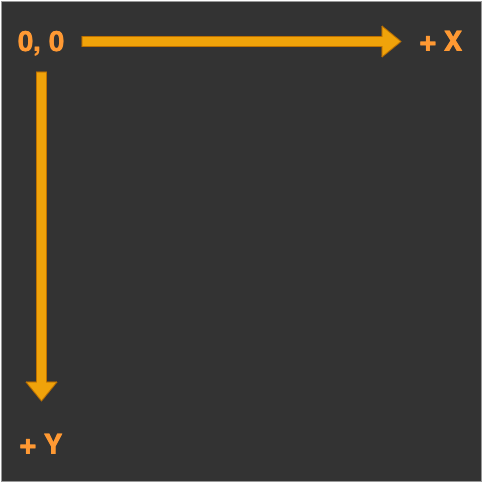

You create a context with the getContext method on the
<canvas> DOM element.
The rendering context
Access the Canvas API via the ctx object.
You should inspect the context object in the console.
console.log(ctx);
The rendering context
console.log(ctx);
You will see current values for all the attributes, and if you
expand the CanvasRenderingContext2D field you will
see the many methods available.
Drawing
Drawing

The rendering context has a coordinate system which, by
default, places the origin at the top left corner of
the canvas.
Each unit of length is 1 pixel.
Drawing
Canvas supports two primitive shapes: rectangles and paths.
A shape can be filled, meaning its area is given a
certain colour or pattern, or it can be stroked, which
means a line is drawn along its edge.
Drawing
There are three functions that draw rectangles on the canvas:
fillRect(x, y, width, height)
strokeRect(x, y, width, height)
clearRect(x, y, width, height)
Drawing
fillRect(x, y, width, height)
strokeRect(x, y, width, height)
clearRect(x, y, width, height)
The parameters are the same for all three functions:
x, y define the top left corner
then we have width and height
Drawing
The colour of the fill, thickness of the stroke, and so on, are
not determined by an argument to the drawing method, but by
properties of the context object.
Drawing
ctx.fillStyle = "red";
fillStyle defines the fill appearance.
Set to a string that specifies a colour.
Uses the same colour notation as CSS.
Drawing
ctx.strokeStyle = "blue";
ctx.lineWidth = 5;
strokeStyle specifies the colour of a stroked line.
Width is set by the lineWidth property.
lineWidth may be any positive number.
Drawing
const x = y = 75;
const w = h = 250;
ctx.fillStyle = "red";
ctx.strokeStyle = "blue";
ctx.fillRect(x, y, w, h);
ctx.strokeRect(x, y, w, h);
Paths
A path is a sequence of points, connected by segments of lines
that can be of different shapes, of different width and of
different colour.
Paths
It is possible to build any complex shape using a combination of
the path tools.
Paths
Paths are not values that can be stored and passed around.
You must make a sequence of method calls to describe its
shape.
Paths
Each segment created with lineTo starts at the
path’s current position.
The current position is usually the end of the last segment.
Or, it is the position passed to moveTo.
Paths
When filling a path:
Each shape is filled separately.
A path can have multiple shapes.
The path needs to be closed.
Paths
If the path is not already closed, a line is added from its end to
its start.
The shape enclosed by the now completed path is filled.
We have cut out two regions of the sprite
sheet and placed them on the canvas.
Sprites
Here is the Idea…
Draw one image, then draw another image
in the same place.
Animation
Animation
requestAnimationFrame()
This method tells the browser that you wish to perform an
animation and requests that the browser calls a callback function
to update an animation before the next repaint.
Animation
requestAnimationFrame()
The callback function is passed a timestamp.
The timestamp is the number of milliseconds since the page was
loaded.
Events
Formally, an event is a message that is sent from the browser to a
JavaScript function.
Examples of events are: mouse clicks, key presses, and window
resizes.
Events
Informally, we can describe events in our animation that require
some sort of response, such as collision detection in a game.